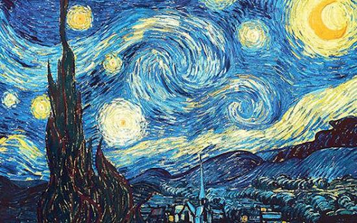

ตัวอย่างงานศิลปะ
Starry Night – Vincent van Gogh
วาดโดยศิลป์ชาวดัตช์นามว่า วินเซนต์ แวน โก๊ะในปี ค.ศ 1889 Starry Night คือหนึ่งในภาพวาดที่เป็นที่รู้จักในวัฒนธรรมยุคปัจจุบัน ภาพวาดนั้นเป็นหนึ่งในคอลเลคชั่นตลอดการของพิพิธภัณฑ์โมเดอร์อาร์ท ในนครนิวยอร์ก ภาพวาดนั้นได้รับแรงบันดาลใจจาเพลง Vincent หรือเป็นที่รู้จักกันในเพลง Starry starry night โดย ดอน แมคคลีน เพลงของแมคคลีนกล่าวถึงภาพวาดที่รวมทั้งผลงานโดยศิลปินที่โด่งดัง